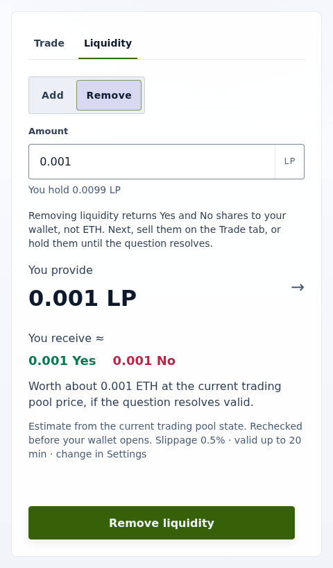

How-to guide
Remove liquidity
Use this guide to withdraw an LP position from a trading pool.
Remove in the UI
- Open the market and select the Liquidity tab, then Remove.
- Enter the LP tokens to remove in Amount. You receive ≈ shows the Yes and No you get back.
- Select Remove liquidity and confirm. The transaction reverts if it would return less than the estimate allows after your slippage tolerance.

Remove through the trading pool contract
- Compute the outputs from
getEffectiveReserves(): each reserve ×liquidity÷ LP total supply, rounded down. Removal first synchronizes the reserves, so donated shares count. - Call the trading pool's
removeLiquidity(liquidity, minYes, minNo, recipient, deadline)withminYesandminNoset from those outputs and your tolerance. The deadline is enforced on chain.
Integrations that need router-based removal can call the router's removeLiquidityWithPermit, whose bounds are named minYesOut and minNoOut, with an exact-amount ERC-2612 signature. Ordinary exact allowances also work for already submitted permits, Safes, and clients without signature support. Never grant a permanent or infinite allowance.
What removal does not do
Removal always returns raw Yes and No, before and after question end, resolution, and forks. It does not use your wallet Invalid, redeem complete sets, settle winning shares, choose a child branch, or migrate liquidity. For those, see Handle resolution and Handle a universe fork.